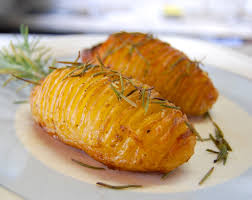

Excelente repositor de energias, aconselhado como refeição durante o dia para os atletas profissionais.
Delicioso prato a base de carne de sol, creme de leite, requeijão e mandioca, tem como dar errado um prato assim?
Prato a moda italiana, refeição rápida e saborosa, disponível nos melhores estabelecimentos do Brasil.
Para os vegetarianos de plantão, esta salada com carde de soja e brócolis alimenta seu corpo sem agredir o meio ambiente.
Suculenta e irresistível mistura de carne moída, queijos e massas para atender o paladar mais apurado j
Bebida energé a base de açai para os atletas de fim de semana que não podem tomar uma tigela de açai puro.
Para os apreciadores da cozinha brasileira, temos a caipirosca, bebida a base de cachaça com uma rodela de limão.
Levanta até defunto, essa bebida a base de goiaba junto com uma vaca atolada resolve qualquer problema de ressaca.
Refescante e hidratante, tome após os exerc&icacute;cios mais cuidado com o sol pois o limão provaca queimaduras na pele.
Para os adimiradores dos alimentos naturais e comidas vega, divirtam-se descobrindo os mistérios desta